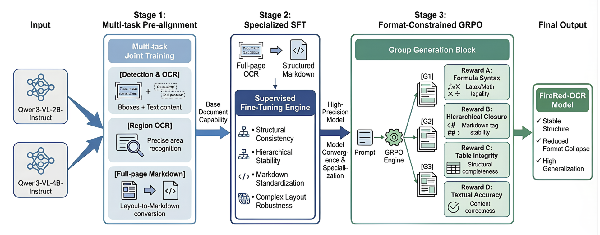
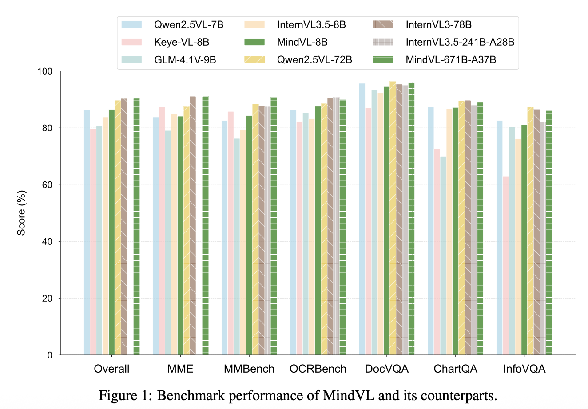
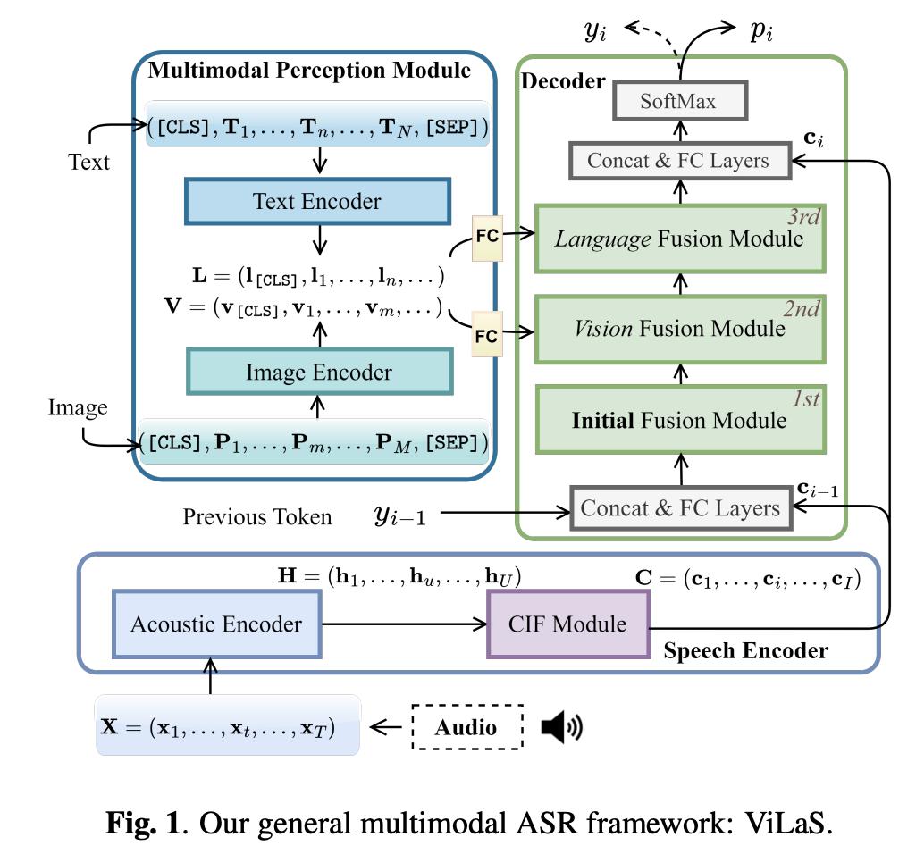
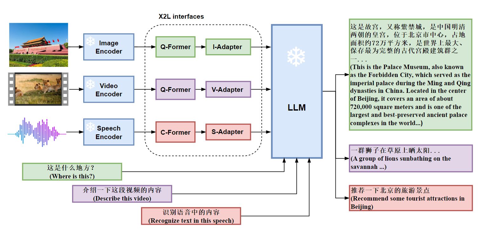
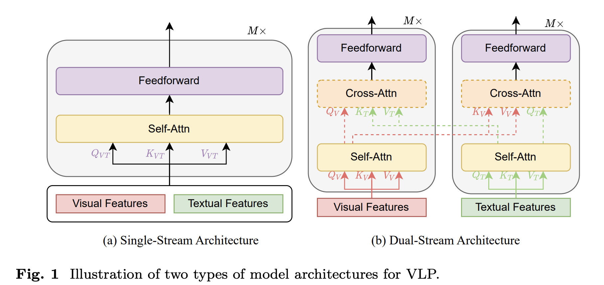
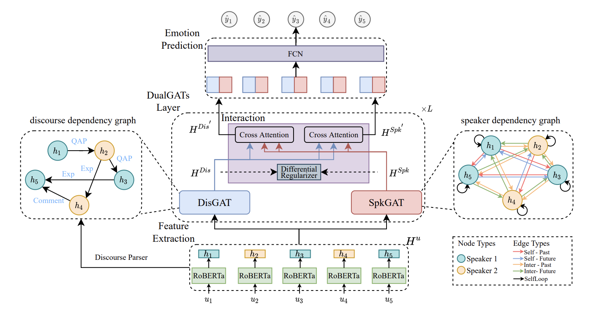
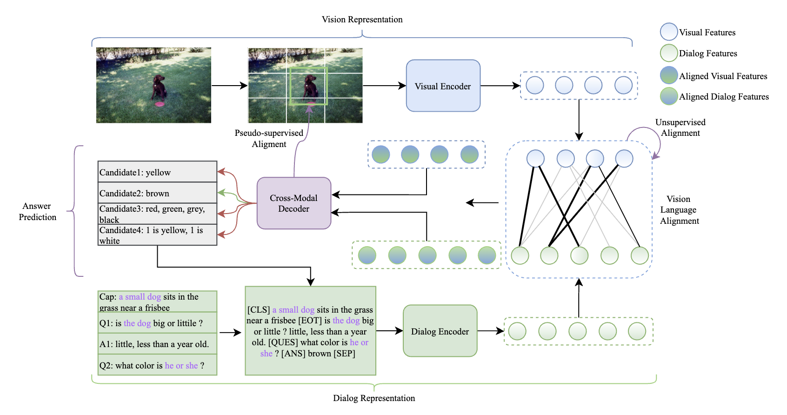
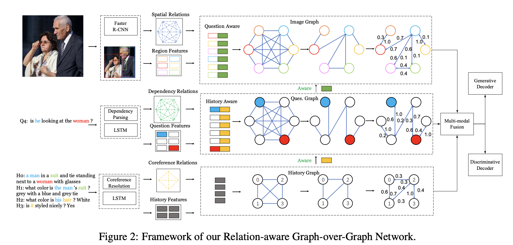
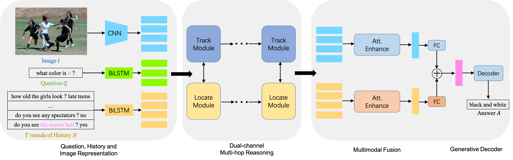

About Me
关于我
My name is Feilong Chen (陈飞龙). I was a researcher (Huawei TopMinds, 华为天才少年) at Huawei from 2023 to 2026. I received the Ph.D. degree in Institude of Automation, Chinese Academy of Sciences, under the supervision of Prof. Bo Xu and the B.Sc. degree in computer sciences from Hefei University of Technology.
My research interests include: multimodal large language models, multimodal reasoning, multimodal generation, omni-modal models.
我是陈飞龙，曾任华为“天才少年”（Huawei TopMinds）研究员（2023-2026）。 我于中国科学院自动化研究所获得博士学位，导师为徐波研究员。本科毕业于合肥工业大学。
我的研究兴趣主要集中在： 多模态大语言模型、多模态推理、多模态生成、全模态模型等。
Experience
科研经历
Researcher (Huawei TopMinds)
Lead the Research & Development of Multimodal Training Framework on Ascend NPUs, Multimodal Data Construction, and MLLM's Pretraining & Finetuning.
华为 · 研究员 (TopMinds)
主导昇腾 NPU 上的多模态训练框架研发、多模态数据构建及 MLLM 的预训练与微调。
Research Intern @ Huawei Cloud
Mentor: Jianlong Chang, Qi Tian (IEEE Fellow).
华为云 · 研究实习生
导师：常建龙，田奇（IEEE Fellow）。
Research Intern @ Microsoft AI
Mentor: Can Xu.
微软亚洲研究院 · 研究实习生
导师：Can Xu。
Tencent Rhino-Bird Elite Talent @ WeChat AI
Mentor: Fandong Meng.
腾讯微信 AI · 腾讯犀牛鸟精英人才
导师：孟凡东。
Recent News
最近动态
- 🔥 [2026.03] Release FireRed-OCR Technical Report: A high-performance OCR system.
- 🚀 [2025.09] Propose MindVL: Towards Efficient and Effective Training of Multimodal Large Language Models on Ascend NPUs.
- ✨ [2023.05] Release X-LLM: The first Omni-modal large language model.
- 📚 [2023.01] Publish VLP: The first survey on vision-language pre-training.
- 🔥 [2026.03] 发布 FireRed-OCR 技术报告：高性能 OCR 系统。
- 🚀 [2025.09] 提出了 MindVL：面向昇腾 NPU 的高效多模态大模型训练框架。
- ✨ [2023.05] 发布 X-LLM：首个全模态大语言模型。
- 📚 [2023.01] 发表 VLP：首篇多模态预训练综述。
Selected Publications
代表性论文









Honors & Awards
个人荣誉
- 2024 CBG President Team Award
- 2018 Outstanding Undergraduate Student of Anhui Province
- 2018 Tongze Scholarship (Top 1%)
- 2015 National Scholarship (Top 1%)
- 2016 National Endeavor Fellowship (Top 1%)
- 2024 CBG 总裁团队奖
- 2018 安徽省优秀毕业生
- 2018 合肥工业大学“同泽奖学金”（Top 1%）
- 2015 国家奖学金（Top 1%）
- 2016 国家励志奖学金（Top 1%）